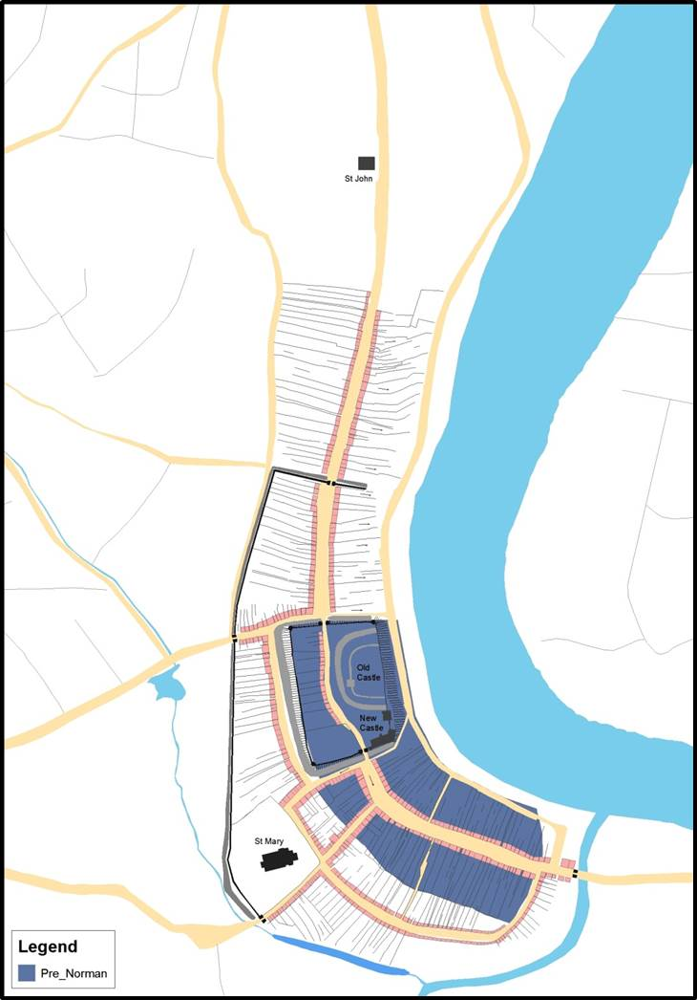

Blog
Viking Swansea - Fact or Fable?
On the 10th April, I attended the MEMO research day at Swansea University, exploring the question ‘Viking Swansea – fact or fable’. Throughout the day we heard from experts on Viking heritage and archaeology in the area: Professor John Hines (Cardiff University) discussed the etymology of the name Swansea and its potential roots in various languages; Dr Jeremy Knight (Inspector of Ancient Monuments, English Heritage / Cadw) considered Cambro-Norse and Norman Connections through examples taken from Orkney, Severnside, and Ireland; while Dr David Griffiths (University of Oxford) shared his research on the Irish Sea Vikings and the implications this might have for Wales.
I began the last session of the day with a short introduction to the City Witness Project, and outlined where the archeological and documentary evidence which Gareth and Keith have been using to put together our map of medieval Swansea have suggested an earlier ‘Viking Swansea’ may have been – the purple section of this map, discussed by Keith in his April blog post.

The project was met with enormous interest by the delegates, and I was sorry to have to tell them that the full version of the website was not yet available for them to explore the layers of Swansea’s history for themselves. Thank you to everyone who showed an interest; I look forward to being able to show you more at our launch on 20th June at Swansea Museum.
The following day I stopped in at Swansea Museum to discuss the upcoming exhibition. I picked a good day, and managed to meet everyone who will be involved in running and publicising the exhibit: Paul, Glenda, Karl, Emma, and even Sabastian Dyer from Swansea City Council who will be helping to spread the word through the big screen in Swansea City Centre and through social media sites. Thanks to everyone’s hard work everything seems to be coming along well, and I for one am very excited about the upcoming launch and exhibit!
Share on Twitter Share on Facebook